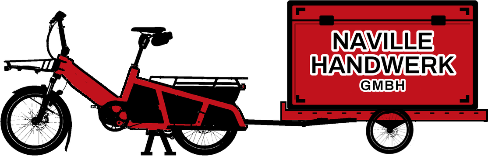

Kurz und ehrlich beantwortet, nach Themen geordnet, damit du schnell findest, was dich interessiert. „FAQ" ist englisch für „Frequently Asked Questions", häufig gestellte Fragen.
Eric Naville: So:
Dazu kommt die obligatorische Unfallversicherung (Berufs- und Nichtberufsunfall); sie läuft von Gesetzes wegen über die SUVA.
Im Einsatz arbeite ich in deinem Team, unter deiner Aufsicht und Installationsbewilligung, wie ein Temporär-Mitarbeiter. Zur Haftung heisst das: Für Schäden gegenüber Dritten und am Werk haftest gegen aussen du, weil ich auf deine Weisung arbeite. Die üblichen Betriebshaftpflicht-Policen versichern temporäres Personal wie die eigenen Leute mit. Richte ich bei dir selbst einen Schaden an, gelten dieselben Massstäbe wie für deine eigenen Mitarbeitenden. Den konkreten Rahmen regelt der Verleihvertrag.
Grundlage: Verleihvertrag Ziff. 13 (Haftung) und Ziff. 14 (Versicherungen), erklärt im Erläuterungsblatt zum Vertrag.
Nein. Als Ein-Personen-GmbH, die ausschliesslich sich selbst verleiht, bin ich bewilligungsfrei; der Kanton Bern bestätigt das auf Anfrage. Erst wenn ich weitere Personen anstellen und verleihen würde, bräuchte es eine ordentliche Bewilligung mit Kaution; das ist hier nicht der Fall.
Grundlage: Art. 28 Abs. 2 AVV, so ausgewiesen im Kopf des Verleihvertrags. Richtwert, keine Rechtsberatung; massgeblich ist die Bestätigung des AWI Bern.
Unter deiner. Als Elektroinstallateur EFZ bin ich keine fachkundige Person im Sinn der Niederspannungs-Installationsverordnung: Eine eigene Installationsbewilligung erteilt das ESTI erst nach der Meisterprüfung oder einer gleichwertigen Qualifikation. Im Einsatz bin ich darum in deinen Betrieb eingegliedert und arbeite nach deinen Weisungen und unter deiner Kontrolle; so brauche ich keine eigene Bewilligung. Schlusskontrolle und Sicherheitsnachweis bleiben bei dir. Genau dafür ist der Personalverleih da.
Grundlage: NIV (SR 734.27) Art. 8 (Fachkundigkeit) und Art. 10b (Beizug von Einzelpersonen); ESTI Bulletin 12/2017; Verleihvertrag Ziff. 3 (Weisungs- und Kontrollrecht, Eingliederung).
Nein. Die Naville Handwerk GmbH verleiht meine Arbeitszeit, kein Werk. Beim Personalverleih trägt der Einsatzbetrieb die Gefahr für die Arbeitsleistung; der Verleiher steht dafür ein, dass er eine geeignete Fachkraft sorgfältig auswählt. Einen Werkvertrag über Installationsarbeiten dürfte die GmbH ohne eigene Installationsbewilligung gar nicht abschliessen. Für Schäden, die ich anrichte, gilt die Antwort zur Haftung oben.
Grundlage: SECO, Weisungen und Erläuterungen zum AVG (Juni 2024), Ziff. 3.1.1.4; NIV Art. 10b Abs. 1. Richtwert, keine Rechtsberatung.
Nein. Ich bin über meine GmbH mein eigener Arbeitgeber und trage alle Arbeitgeberpflichten und Sozialabgaben (AHV/IV/EO, ALV, Pensionskasse, SUVA). Du zahlst nur das vereinbarte Honorar pro Stunde plus MWST: kein Lohnausweis, keine Abrechnung über dich.
Grundlage: Art. 19 AVG (Verleiher = Arbeitgeber) · Verleihvertrag Ziff. 7 (im Ansatz enthalten).
Du bestätigst mir den Wochen-Stundenrapport mit Unterschrift. Daraus stelle ich je Woche eine Rechnung: Stunden × Ansatz plus MWST, zahlbar innert 30 Tagen. Einwände gegen den Rapport bringst du innert 5 Arbeitstagen an, danach gilt er als genehmigt. Einfach und nachvollziehbar.
Grundlage: Verleihvertrag Ziff. 5 (Wochenrapport, Einwandsfrist) und Ziff. 8 (Zahlung).
65.–/Std als Richtwert; vereinbart wird der Ansatz je Einsatz. Für eine gelernte Fachkraft im Verleih liegt er am unteren Rand: Meine GmbH ist neu, und in der Aufbauphase steige ich bewusst tief ein.
Mein Stundenansatz ist dabei offen kalkuliert: Lohn, Sozialabgaben, Betriebskosten und eine überschaubare Marge. Im unten verlinkten Preisrechner kannst du jede Zahl selbst durchspielen und siehst, wofür genau du zahlst.
Fair ist der Ansatz in beide Richtungen: Der tiefe Einstieg gilt für die erste Zeit; sobald der Betrieb steht, steigt der Ansatz. Und günstig heisst nicht dauerhaft: Ich bin die verlässliche Aushilfe für den akuten Engpass, keine billige Dauerlösung.
Grundlage: Verleihvertrag, Einsatzblatt (Ansatz) · → Zum Preisrechner
Ja, sobald meine GmbH MWST-pflichtig ist (Personalverleih, Normalsatz 8,1 %). Für dich als Betrieb ist sie in der Regel neutral: Du ziehst sie als Vorsteuer wieder ab.
Richtwert, keine Steuerberatung · Verleihvertrag Ziff. 7 (MWST kommt zum Ansatz hinzu).
Das übliche Fenster ist Mo–Fr, 06:45–18:00, ein Arbeitstag rund 8 Std. Abends, samstags, sonntags oder an Feiertagen arbeite ich auf Anfrage, zum selben Ansatz.
Dazu kommen die Zuschläge nach GAV. Sie erscheinen als zusätzliche Zeit auf dem Rapport (Sonn-/Feiertag +100 %, Nacht +50 %, Samstagnachmittag +25 %; trifft mehr als eines zu, zählt nur der höchste). So siehst du genau, was anfällt.
Grundlage: Verleihvertrag Ziff. 4 (Einsatzfenster) und Ziff. 5 (Zuschläge; Tabelle im Erläuterungsblatt) · gesetzliche Lohnzuschläge nach GAV Elektrobranche.
Im Jahreskalender: grün = frei, orange = belegt, grau = nicht verfügbar. Du kannst freie Tage direkt antippen und mir daraus mit einem Klick eine Anfrage schicken. Reserviert wird nichts: Du fragst, ich sage zu oder ab.
Gebucht wird immer für ganze Arbeitstage, mindestens acht Stunden.
Buchungseinheit: Verleihvertrag Ziff. 5 · → Zum Jahreskalender
Kannst du: Reserviert wird ja nichts, du fragst und ich sage zu oder ab. Nur bin ich ehrlich mit dir: Ich stehe noch am Anfang. In der Startphase meiner GmbH halte ich den Tarif bewusst tief und habe erst wenige Kontakte. Darum bin ich darauf angewiesen, möglichst regelmässig und zusammenhängend zu arbeiten, um überhaupt auf genügend Umsatz zu kommen.
Wenn einzelne Tage herausgepickt werden und dazwischen viele Lücken bleiben, macht mir das gerade jetzt zu schaffen: Die Lücken lassen sich kaum füllen, weil es für Einsatzbetriebe wenig attraktiv ist, jemanden sehr unregelmässig zu beschäftigen. Ein paar Tage am Stück oder ein durchgehender Einsatz helfen mir deshalb im Moment am meisten.
Das ist kein Muss: Frag ruhig so, wie es dir passt. Und sobald ich mehr Kontakte oder einen etwas höheren Tarif habe, trägt sich auch das Herauspicken einzelner Tage für meinen Umsatz; dann sind verstreute Tage kein Thema mehr.
Elektro-Installationsarbeiten im Team sowie allgemeine Handwerks- und Bauhilfe (ich habe für drei Jahre als Hilfsarbeiter in einer Zimmerei gearbeitet). Eine höhere Ausbildung habe ich nicht: Meine Stufe ist Elektroinstallateur EFZ, kein Zusatz wie Teamleader.
Qualifikation und Ausweise: Verleihvertrag Ziff. 2 (lege ich auf Verlangen vor) · → Was du von mir hast und was nicht
Die kleinste Einheit ist ein ganzer Arbeitstag: Gebucht wird in ganzen Arbeitstagen von mindestens acht Stunden. Eine Mindestdauer darüber hinaus gibt es nicht: Du setzt mich ein, solange der Engpass dauert. Der Verleihvertrag regelt den Rahmen:
Grundlage: Verleihvertrag (Einsatzblatt; Ziff. 5, 9 und 10 der Vertragsbedingungen).
Bei Betrieben, die ich noch nicht kenne, mache ich zuerst einen kurzen Besuch: Wir stellen uns vor, du erklärst mir, wo es klemmt, wie ich helfen kann, was es dazu von mir braucht und für wie lange. Wenn es passt, gehen wir anschliessend kurz auf die dringlichste Baustelle, damit ich sehe, mit wem ich zusammenarbeiten soll und was ansteht. Wenn alles passt, erstellen wir zwei Kopien vom Vertrag und unterschreiben beide.
Grundlage: Verleihvertrag, Schriftform vor Einsatzbeginn (Art. 50 AVV), zwei Exemplare (Ziff. 21).
Jeden freien Tag im Jahreskalender kannst du anfragen, auch sehr kurzfristig, im Raum Bern. Auch der schnelle Start ist geregelt: Der Verleihvertrag muss vor Einsatzbeginn beidseitig unterschrieben sein (Schriftform); für kurzfristige Einsätze liegt er als Vorlage bereit und ist in wenigen Minuten ausgefüllt. Kennen wir uns noch nicht, kommt zuerst der kurze Besuch (siehe vorige Frage); richtig kurzfristig, auch von heute auf morgen, geht es, sobald wir uns kennen.
Zum Weg: Ich habe kein eigenes Firmenfahrzeug (ich komme mit Velo und Veloanhänger); für Material oder grössere Anfahrten fahre ich dein Fahrzeug oder werde von einem deiner Mitarbeiter gefahren. In Bern ist es zunehmend von Vorteil, nicht einen Parkplatz suchen zu müssen. Weiter ist es zeitlich von Vorteil, nicht über den Umweg deines Unternehmens auf die Baustelle zu gehen. Material kann direkt auf die Baustelle geliefert werden, anderes kannst du persönlich liefern, wenn du z. B. für eine Bausitzung auf die Baustelle kommst.
Grundlage: Verleihvertrag (Schriftform vor Einsatzbeginn, Art. 50 AVV) · → Zum Jahreskalender
Frage offen? Schreib mir kurz, was du brauchst.
Kontakt aufnehmen
Der Notstromer für Berner Elektrikerfirmen